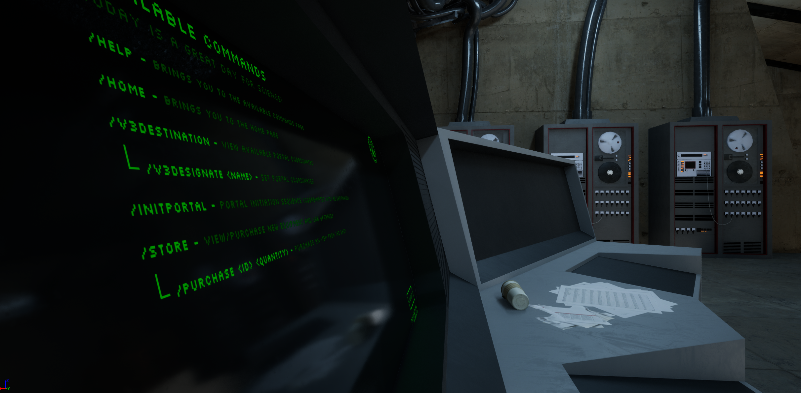
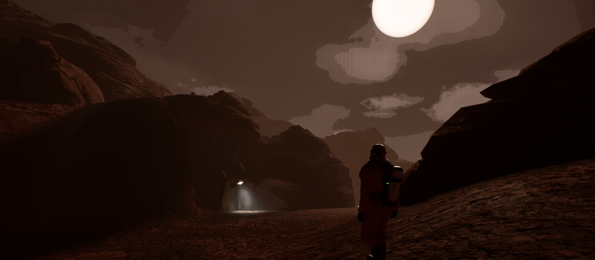
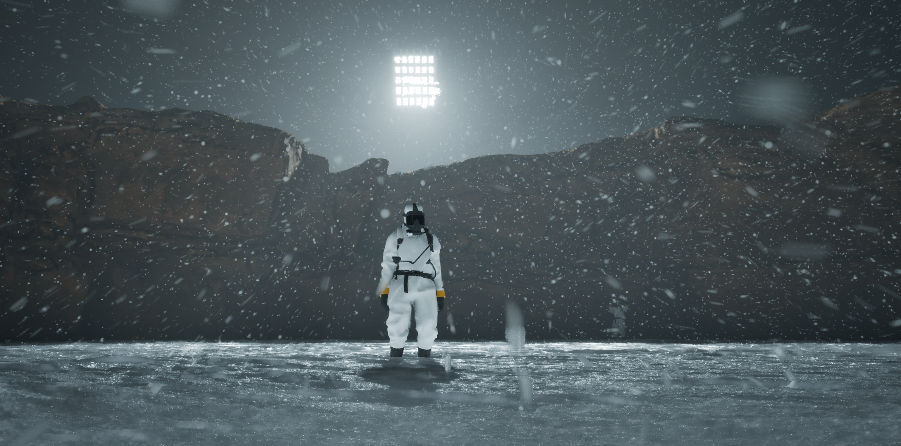

Development Blog #1
Posted by Noah, Logan on 12/15/2024
Welcome to our very first development blog for Don't Stop Recording. This is the beginning of a journey where we will dive deep into our process, share our progress, and give you insights into what we're working on. In this devblog, we'll introduce the overall concept, initial inspirations, and the features we're most excited about.
Project Introduction
by Noah, Logan
Don't Stop Recording is a multiplayer survival horror game set in the backrooms. The game combines elements of suspense, teamwork, and documentation, focusing on a unique gameplay experience where the players must collect data and survive with limited resources.
Back Story
Time: 1955
Location: Unknown, US.
You are a member of the Active Anomalous Research Group (A.A.R.G), established in 1955 by the United States government following a groundbreaking discovery by scientists in 1951. These scientists uncovered the existence of the backrooms while conducting highly confidential research into inter-dimensional portals on behalf of a deep black project run by the CIA.
Previous endeavors to explore and document the various levels of the backrooms proved to be substantial failures, largely due to the unsuitability of military personnel for these missions.
Consequently, the Active Anomalous Research Group was formed, comprising a team of exceptionally intelligent and rigorously trained specialists. Your sole objective is to systematically gather and record comprehensive data across all levels of the backrooms.
Your directive is clear: DO NOT STOP RECORDING.

The core mechanics revolve around using a vintage camera to document everything you encounter. Players need to carefully manage their camera's memory while navigating dangerous environments, documenting crucial events, and completing objectives as part of their mission.
Player Tools & Challenges
Players have a limited set of tools at their disposal: a vintage camera, a flashlight, and a basic watch. The watch provides crucial information, such as the current time, stamina, and health status, but players must balance usage to avoid straining resources. Memory management is a significant challenge—players need to decide when it's essential to record, as the camera has limited storage. This management element adds pressure and heightens the horror experience.
Shift System & Teamwork
Work shifts run from 9 am to 5 pm, with players having a one-hour overtime window before they risk getting stranded in the backrooms. Teamwork is critical; players must share responsibilities, such as taking readings, maintaining equipment, or serving as a lookout. If a player fails in their duty, the whole group might face consequences, adding tension to each shift.

Visual & Audio Design
by Noah
Creating an eerie and immersive atmosphere is one of our primary goals. We're working on distinctive visual styles that complement the horror elements of the game, and the audio design aims to heighten tension with subtle environmental cues and sound effects.
Lighting & Visual Aesthetics
We utilize dynamic lighting that reacts to player actions, which helps in building suspense. The game incorporates dim, flickering lights and unexpected blackouts to keep players on edge. We’re also experimenting with a dithering shader to simulate different levels of sanity—the more stressed the character, the more erratic the visuals become, adding another layer of immersion.
Soundscapes & Fear Dynamics
Sound plays an essential role in amplifying the horror experience. We use spatial audio techniques to ensure that every creak, distant wail, or approaching footstep feels real. The ambient score is minimal but strikes during key moments to elevate suspense. Players are encouraged to listen carefully for audio cues that might signal hidden dangers, making the sound a survival tool as much as it is an atmospheric component.

What's Next?
by Noah, Logan
Moving forward, we are focusing on prototyping additional features, finalizing the gameplay loop, and refining the overall player experience. Stay tuned for more updates in future devblogs, and feel free to share your thoughts with us!
Upcoming Features & Testing
We plan to introduce new anomalies that change how players approach tasks in the backrooms. Our immediate focus is on building different level types—each with distinct environments and challenges. We’re also working on introducing a player progression system where players can unlock new tools and upgrades that make surviving the backrooms slightly more manageable. Closed alpha testing will start soon, and we’re excited to gather player feedback to improve the game.